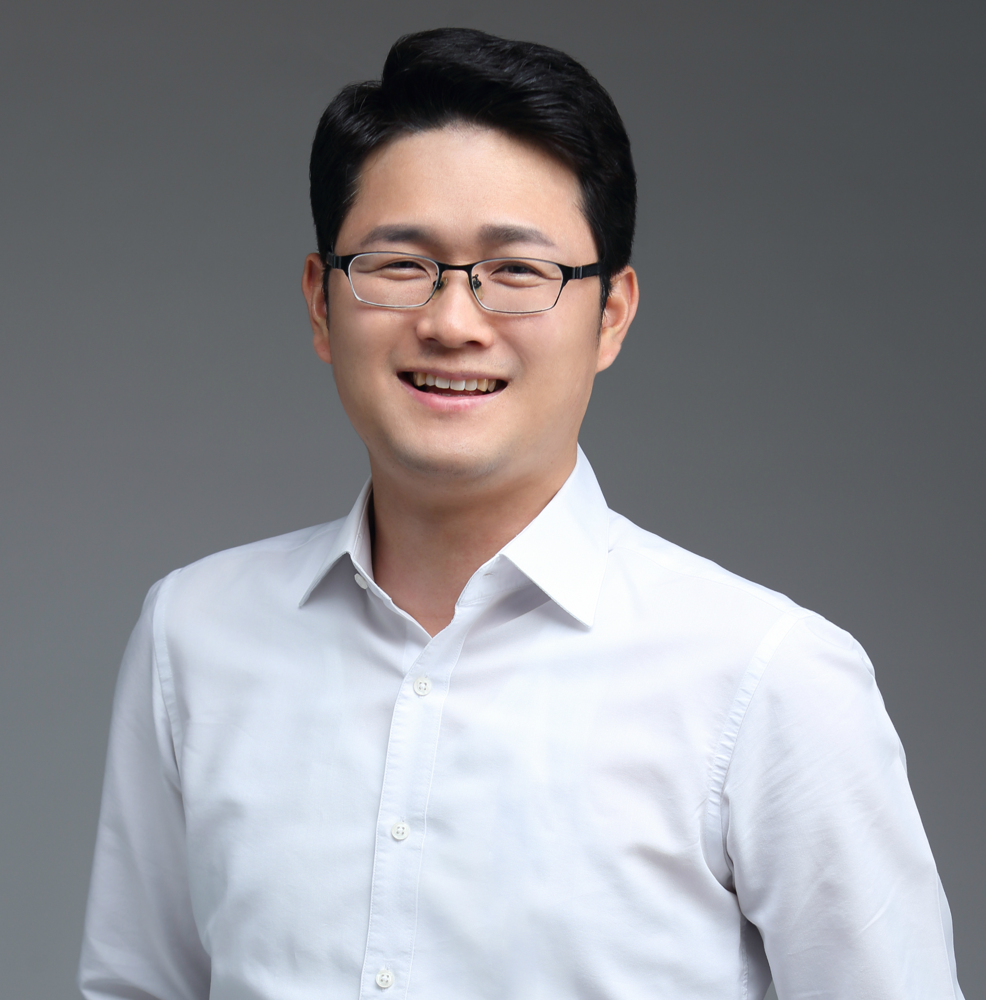

병의원 세무
원장님은 진료에 집중하세요.
개원부터 운영까지 세무의 흐름을 함께합니다.
진료에 집중하는 오늘, 자산을 준비하는 내일,
새로운 시작의 순간까지.
김인화 세무사가 함께합니다.
같은 세금이라도, 필요한 해답은 다릅니다.
사업과 자산의 특성에 맞춰 꼼꼼하게 살펴봅니다.
원장님은 진료에 집중하세요.
개원부터 운영까지 세무의 흐름을 함께합니다.
소중한 자산, 결정하기 전에.
취득과 보유, 양도까지 세금을 미리 살펴봅니다.
좋은 시작이 성장의 기반이 되도록.
사업의 첫 단계부터 세무의 기초를 다집니다.

“고객의 이야기를 먼저 듣고,
이해할 수 있는 언어로 답하겠습니다.”
안녕하세요. 김인화 대표세무사입니다.
세금 앞에서 막막했던 순간이, 더 나은 결정을 내리는
기회가 될 수 있도록 함께 고민하겠습니다.
사업의 시작부터 중요한 자산의 결정까지,
고객의 입장에서 생각하는 세무 파트너가 되겠습니다.
무엇부터 준비할지 모르셔도 괜찮습니다.
지금의 고민에서부터 차근차근 시작합니다.
상담할 분야와 현재 상황을
간단히 정리해 주세요.
필요한 자료와 검토할 내용을
상담 과정에서 안내합니다.
검토 내용에 맞는 업무 범위와
진행 방향을 안내합니다.
개원 예정일, 진료과, 임대차 계약 여부, 예상 인원, 의료장비 구입 계획을 적어두세요. 이미 운영 중이라면 최근 신고서와 매출·비용 현황이 도움이 됩니다. 첫 문의에서는 환자 정보가 포함된 자료를 보내지 않으셔도 됩니다.
물건의 종류와 소재지, 취득 시기와 금액, 현재 소유 현황, 예정 거래와 시기를 정리해 주세요. 계약서나 등기 관련 자료가 있으면 보유 여부를 알려주세요. 주민등록번호와 계좌번호를 홈페이지에 입력할 필요는 없습니다.
네. 예정 업종, 사업장 소재지, 시작할 시기, 공동사업 여부, 예상 매출과 비용을 간단히 정리해 주세요. 개인사업자와 법인 중 고민 중이라면 아직 결정하지 않았다고 말씀해 주셔도 됩니다.
현재 맡기고 있는 업무, 최근 신고가 끝난 시점, 변경을 원하는 시기를 알려주세요. 기존 사무실의 장부와 신고서 등 인계 가능한 자료를 확인해 두면 상담에 도움이 됩니다.
상단에서 분야를 선택하면 준비사항과 전화 연결이 열립니다. 현재 홈페이지는 온라인 접수나 자료 업로드를 받지 않습니다. 전화 02-523-8434로 상담을 신청해 주세요. 비용과 업무 범위는 의뢰를 결정하기 전에 확인해 주세요.
영상으로 쉽게 만나고,
SNS에서 편하게 소통하세요.
일상 속 세무 이야기
짧고 명료한 세무 생각
유튜브 영상과 SNS 채널은 순차적으로 연결됩니다.